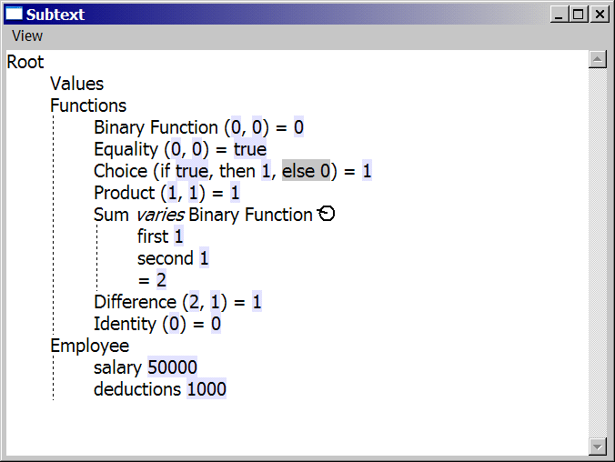
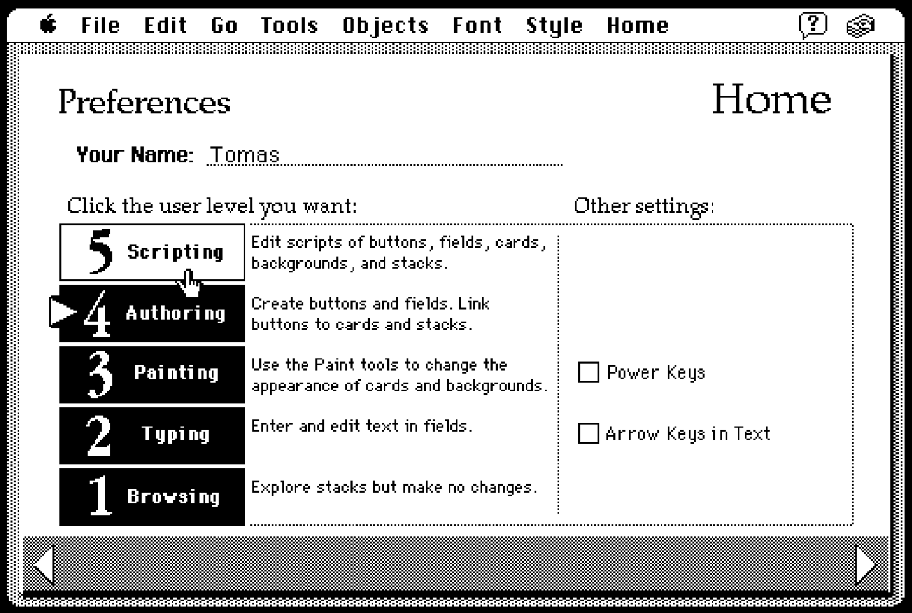
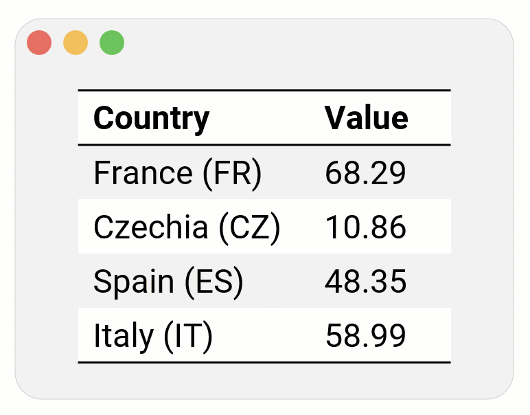
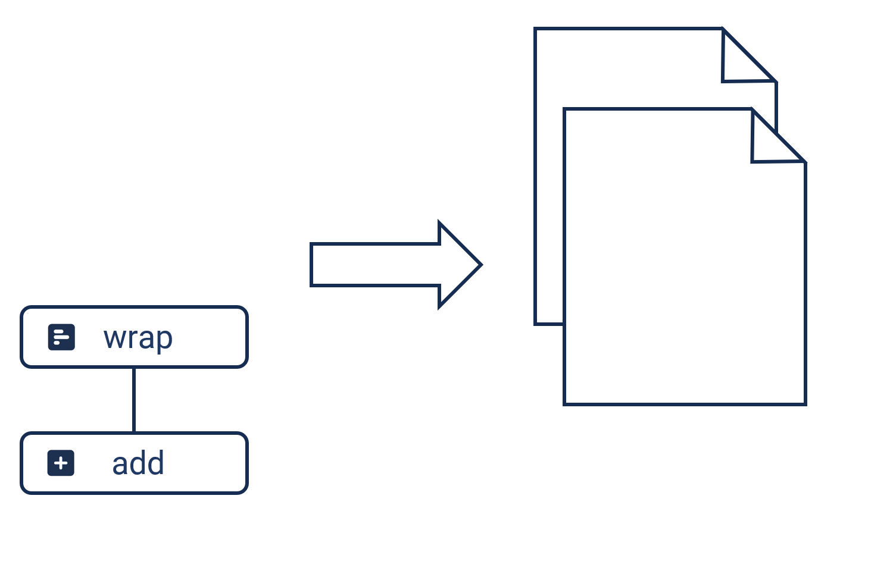
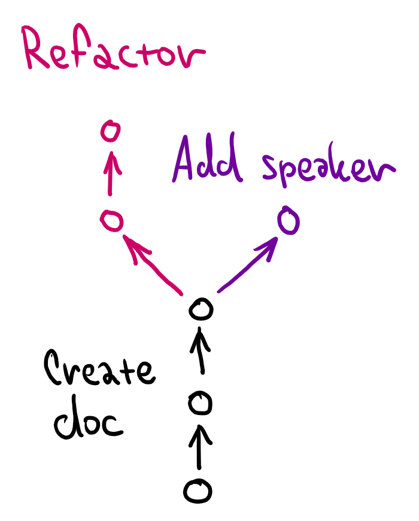
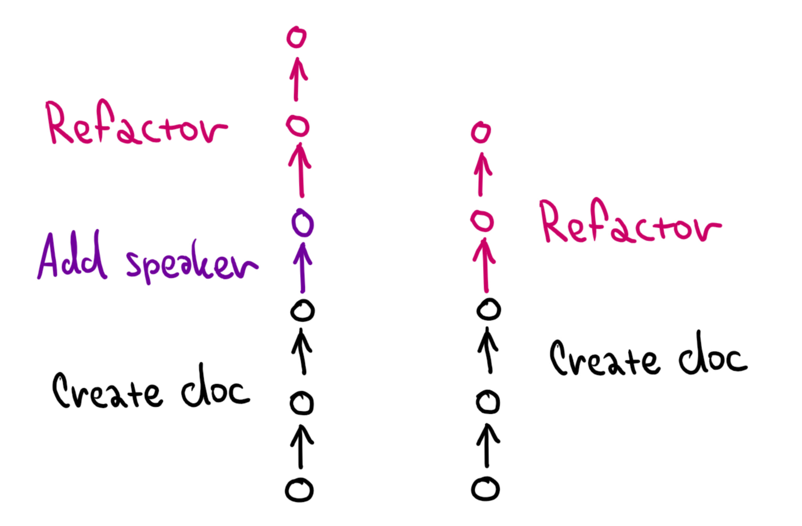
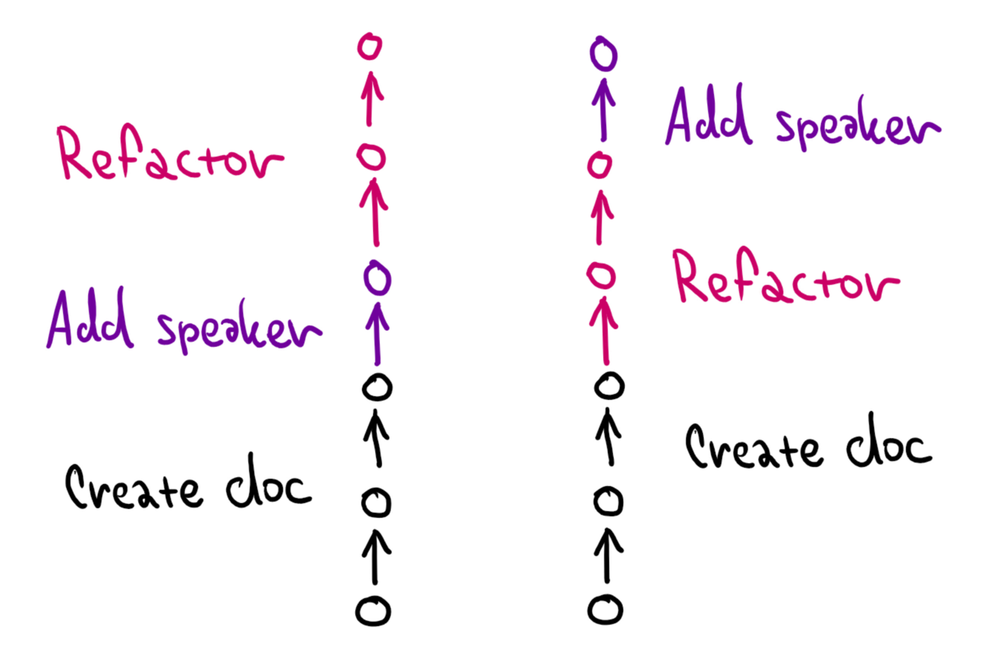
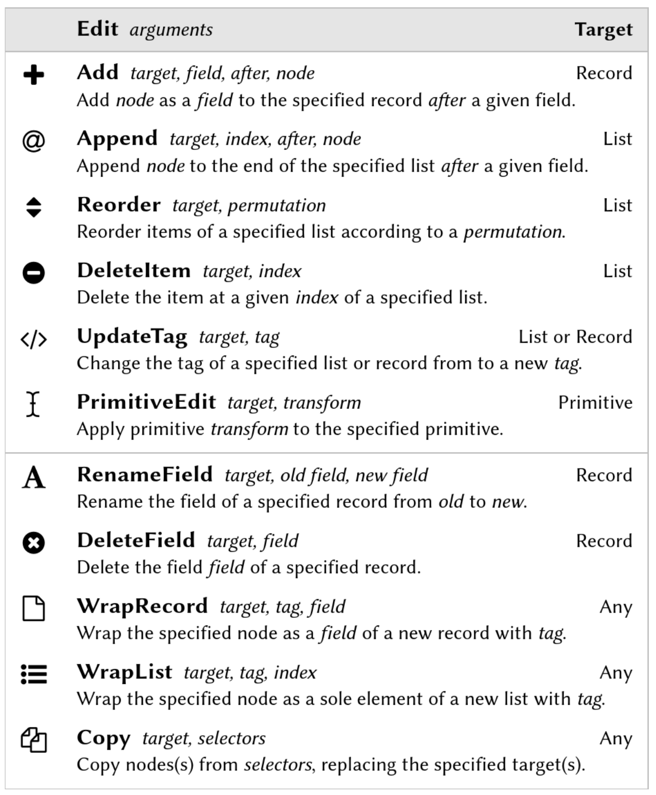
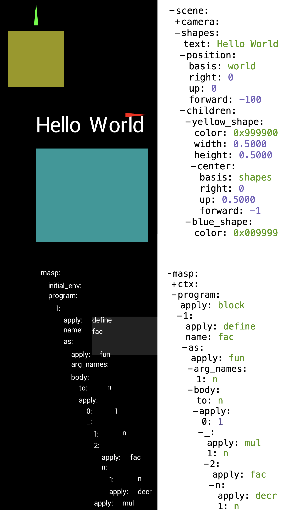

Computational Substrates for Document-Oriented Programming
Tomas Petricek, Charles University, Prague

Essence
What do all of these have in common?

Boxer (1986)
Environment for creating interactive textbooks
Spatial metaphor
Naive realism

Subtext (2005)
Non-textual programming system based on copying
First-class copy&paste
Concrete programming

Jupyter/IPython (2001)
Literate programming environment for data science
Notebook with cells
Code, outputs, text

Hypercard (1987)
Hypermedia authoring system for end-users
Stacks of cards
User levels
HyperTalk language
Definition
Document-oriented programming system
Definition
Document-oriented programming system
-
Primary notation is document
Contains other data and code notations -
Interaction through document
Authoring and using through the same interface -
Editing running at the same time
No separation between edit-time and run-time
Why document-oriented systems?

Programming research
What is the formal model?
Can we type check them?
What are their design choices?
Human-centric research
Better support non-programmers
Support progression to expert
More open and transparent!
Denicek
Substrate for end-user doc programming
Programming experiences
Programming experiences
Collaboration

Merge edits made independently by different users
Demonstration

Specify program by showing concrete document action
Schema change

Adapt references when document structure changes

Denicek
Computational substrate for end-user document-oriented programming
Makes implementing
such systems easy!

Webnicek
Web-based end-user programming tool
Co-developed with the Denicek substrate
Six formative examples

Datnicek
Simple data science notebook system
Collaborative editing
Programming by demonstration
Incremental evaluation
Denicek: Document and Edit history
Denicek: Document and Edit history

Denicek: Document and Edit history

Denicek: Document and Edit history

Denicek: Document and Edit history

Demo
Conference planning in Webnicek

Collaborative editing

Collaborative editing
One user changes the document structure

Collaborative editing
One user changes the document structure
Another user changes
data in the document
Can we merge the edits?

Merging edits
Linearize like rebase

Merging edits
Linearize like rebase

Merging edits
Linearize like rebase
Add data first, then change document structure is easy!

Merging edits
Linearize like rebase
Add data first, then change document structure is easy!

Merging edits
Linearize like rebase
Add data first, then change document structure is easy!
Change structure, then add new data is tricky!
Three primitive operations
Apply edit history
Compute the current
document state
Merging of histories
Turn branching into
a linear history
Conflict detection
Report merge conflicts
Merging of edit histories
Merging
Given \(E, E_1\) and \(E, E_2\) with a shared prefix \(E\):
\(\mathcal{M}_E(E_1, E_2) = E, E_1, E_2'\)
\(\mathcal{M}_E(E_2, E_1) = E, E_2, E_1'\)
Edit reconciliation
Given \(e_1\) and \(e_2\), produce \(e_2', e_2'', \ldots\) that can be applied after \(e_1\)
- Apply \(e_1\) to nodes newly added by \(e_2\)
- Transform references in \(e_2\) according to \(e_1\)
Demo
Programming by demonstration

The unreasonable effectiveness of merge
Simply replay edits on top of the current history!

The unreasonable effectiveness of merge
Simply replay edits on top of the current history!

The unreasonable effectiveness of merge
Simply replay edits on top of the current history!
Does not work if the
document evolves...

The unreasonable effectiveness of merge
Branch off from the original document version & merge

The unreasonable effectiveness of merge
Branch off from the original document version & merge

The unreasonable effectiveness of merge
Branch off from the original document version & merge
Merging logic adapts edits to the new schema
The unreasonable effectiveness of merge
-
Collaborative-document editing
Merge edits done independently -
Programming by demonstration
Replay edits correctly using merge -
Incremental recomputation
Remove conflicting evaluated edits -
Concrete programming
Edit formula before it was copied
Demo
Denicek-based data exploration
Design choices
Document-oriented programming systems
Design
Four clusters of design choices
- Document shape, representation, modularity
- Programming model, embedding, capabilities
- Display and editing mechanism
- Evaluation mode and state representation

Display mechanism
Naive realism
Boxer, Webstrates
Renderer with widgets
Jupyter, Forms/3
API calls
Ampleforth, Hypercard
Memory-mapped
BootstrapLab, (BASIC :-)

Evaluation state
Ephemeral results
Spreadsheets, Jupyter
Materialized results
Hypercard, Webstrates
Internalized execution
Boxer, BootstrapLab
Materialized execution
Denicek, Subtext
Computational Substrates for
Document-Oriented Programming
Interesting kind of programming systems...
For user-centric and theory research
Ask me about Denicek and design choices
Tomas Petricek, Charles University, Prague